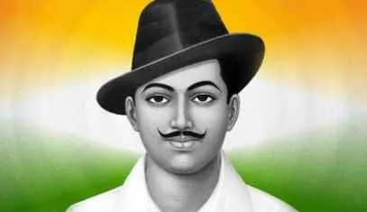

Bhagat Singh
An Indian revolutionary socialist who was influential in the Indian independence movement.
1907 - 1931
"Inquilab Zindabad!" - Bhagat Singh
Biography of Bhagat Singh
- Early Life and Activism
- Bhagat Singh, born on September 28, 1907, in Banga, Punjab, was a revolutionary freedom fighter who played a pivotal role in India's struggle for independence against British colonial rule. His passion for freedom and equality ignited at a young age, witnessing injustices and the Jallianwala Bagh massacre.
- Role in the Independence Movement
- With an aggressive yet strategic approach, Bhagat Singh joined the Hindustan Socialist Republican Association (HSRA) and advocated for complete independence. He organized protests, embraced non-cooperation, and believed in armed resistance to challenge British authority. The Lahore Conspiracy Case and the bombing of the Central Legislative Assembly marked his bold protests against oppressive policies.
- Influence on Youth and Ideology
- Bhagat Singh's fervor and radical ideas resonated deeply with the youth. His writings, including articles in 'Kirti' and 'Young India,' continue to inspire the modern generation, emphasizing the importance of freedom, sacrifice, and the fight against inequality.
- Legacy and Martyrdom
- On March 23, 1931, at the young age of 23, Bhagat Singh, along with Rajguru and Sukhdev, embraced the gallows, becoming immortalized as martyrs. Their sacrifice stirred the nation, fueling the freedom movement further and awakening a spirit of rebellion against colonial rule.
- Inspiration to the Youth Today
- Bhagat Singh's courage, resilience, and dedication to the nation remain a guiding light for today's youth. His ideologies of social justice, equality, and liberty continue to echo in the hearts of individuals striving for a better society.